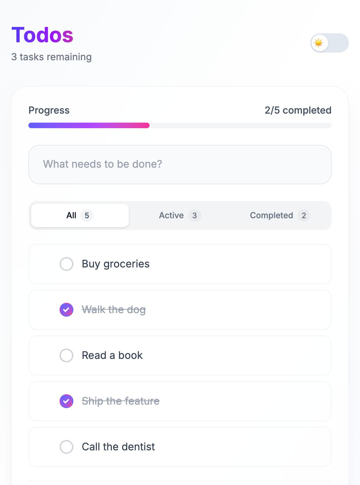
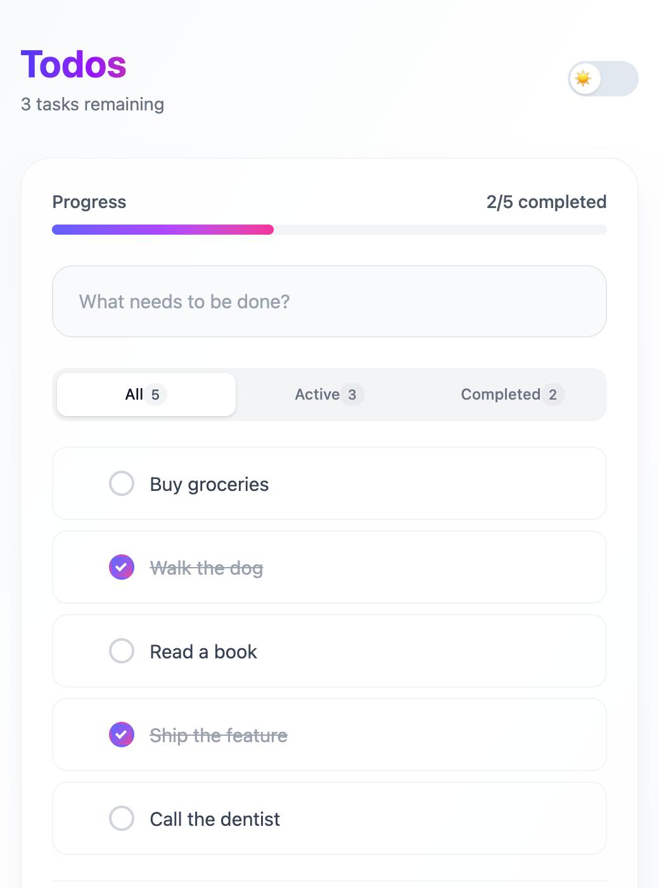

Same todo app. Same features. Same data. Different architectures. Measured head-to-head.
Identical data, same viewport, light mode. Puppeteer screenshots.
Next.js

Vanilla

Features: add, delete, toggle complete, filter (all/active/completed), progress bar, clear completed, drag-to-reorder, dark mode, inline edit (double-click).
Next.js 16 React 19 · React Server Components · Server Actions · React Query · Zustand · Framer Motion · dnd-kit · Tailwind v4
Vanilla HTMX 2.0 · SortableJS · Server templates · Tailwind v4
All assets served locally. Same JSON-file backend. 7 runs per app, median reported. Each run: fresh browser context, cache disabled, page load, 3s hydration wait, add 5 todos via form, collect metrics.
| Metric | Next.js | Vanilla | Matters? | |
|---|---|---|---|---|
| LOAD | ||||
| TTFB | 5 ms | 14 ms | Next.js | No. 9ms gap is imperceptible. |
| DOM complete | 62 ms | 51 ms | Vanilla | No. Both under 100ms. |
| MEMORY | ||||
| Memory at rest | 3.70 MB | 1.71 MB | 2.2x | Yes. Framework baseline on every page. |
| Memory active | 7.73 MB | 2.48 MB | 3.1x | Yes. Grows with app complexity. |
| Memory post-GC | 5.23 MB | 1.49 MB | 3.5x | Yes. Memory that can never be freed. |
| CPU · full session | ||||
| Script CPU | 190 ms | 36 ms | 5.3x | Yes. Battery drain, input lag on low-end devices. |
| Layout | 26 ms | 20 ms | ~tie | No. |
| Task duration | 559 ms | 284 ms | 2.0x | Yes. Blocks the main thread from handling input. |
| Layout reflows | 252 | 67 | 3.8x | Somewhat. Caused by Framer Motion animations. |
| NETWORK | ||||
| Initial JS bundle | 823 KB | 93 KB | 8.8x | Yes. Must parse before app is interactive. |
| Requests | 12 | 9 | Vanilla | Marginal. |
| Total transfer | 298 KB | 337 KB | Next.js | No. 39KB difference is negligible. |
| Event listeners | 758 | 972 | Next.js | No. Neither count causes issues. |
Transfer: Vanilla sends more because each interaction returns full-page HTML (~7KB per swap). Next.js Server Actions return minimal diffs. The tradeoff is more bytes over the wire for zero client rendering logic.
Listeners: HTMX re-processes hx-* attributes on each innerHTML swap. React delegates events at the root. Neither count causes issues.
| Next.js | Vanilla | ||
|---|---|---|---|
| App code | 433 lines | 449 lines | slightly more |
| Config | 98 lines (5 files) | 5 lines (1 file) | 20x less |
| Library code depended on | ~1.3 million lines | ~80 thousand lines | 16x less |
| Initial JS bundle | 823 KB | 93 KB | 8.8x less |
| npm packages installed | 375 | 89 | 4.2x fewer |
| node_modules on disk | 480 MB | 27 MB | 18x less |
| Project files | 11 | 5 | 2.2x fewer |
In this scoped example, app code is similar. In practice, Next.js code grows faster — every mutation needs useMutation boilerplate, every data boundary needs client/server wiring, every animation needs Framer Motion orchestration. HTMX stays flat: add a route, add a template.
On dependencies: Next.js has 9 production deps and 8 dev deps that expand to 375 transitive packages. Vanilla has 2 build-time-only deps that expand to 89 packages — and the client JS itself (htmx, sortable) is just static files downloaded once, not npm-managed.
Same 5 todos, fresh page load, measured after hydration.
| Next.js | Vanilla | ||
|---|---|---|---|
| DOM elements | 114 | 111 | same |
| Body HTML | 14.8 KB | 15.2 KB | same |
Neither app virtualizes. Both render real DOM nodes per todo. Identical output.
18+ packages · ~400 MB node_modules · 7+ config files
2 client libraries · no client build step
On a fast connection, both apps are indistinguishable to users. The difference is what the device pays: Vanilla costs 3.5x less memory and 5.3x less CPU. Next.js provides React Server Components, streaming for slow networks, and ecosystem access.
Most web apps are CRUD. If your state fits in a URL and a database row, the React stack is solving problems you don't have.
Puppeteer CDP · Next.js 16.2 · React 19.2 · HTMX 2.0 · May 2026